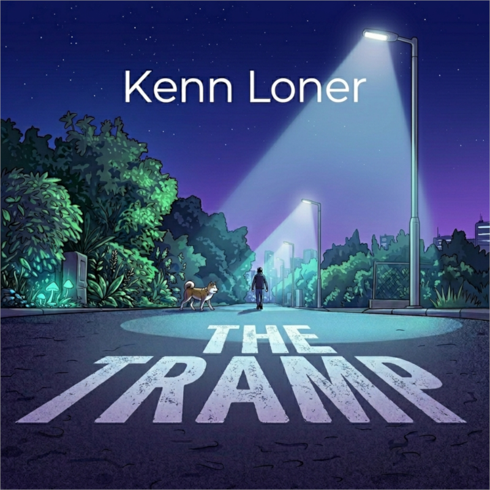

Play on your favorite platform.
Produced, Mixed, and Mastered by: Kenn Loner
Release date: April 17, 2026
"The Tramp" is an introspective journey through sound, crafting a dreamy atmosphere that invites you to dive in the vibes. This track marks the official debut of the Kenn Loner project, exploring the fine lines between Melodic House and Deep House.
It is more than just a song—it is my sonic road journal. It was born during those late nights spent walking miles through the city streets, tidying up my thoughts, accepting my failures, and searching for hope. This is the music of my footsteps and the silence after the storm.